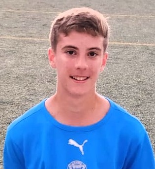

Constancia
Entrenar todos los días incluso cuando todavía nadie garantiza resultados.
Proyecto deportivo personal
La historia de Alejo Encinas Camacho: de empezar como portero en prebenjamín a convertirse, con trabajo diario, en un defensa imprescindible.

Del 2012, fútbol base y una mentalidad clara: entrenar, aprender y competir cada temporada un poco mejor. Alejo comenzó en el Ogíjares 89 como portero, pero pronto decidió que quería vivir el fútbol también como jugador de campo.
Cuando no le tenían muchas esperanzas, eligió responder con hechos: veía vídeos de fútbol en YouTube, estudiaba movimientos, los repetía en los entrenamientos y trabajaba cada día hasta hacerse importante para su equipo.
Entrenar todos los días incluso cuando todavía nadie garantiza resultados.
Mirar, analizar, repetir y convertir cada vídeo y cada ejercicio en una mejora real.
De portero a jugador, de lateral izquierdo a central: adaptarse para ayudar al equipo.
En la temporada 2025/26 llegó al Alhendín para competir en Segunda Andaluza Infantil. Empezó como lateral izquierdo y, desde el tercer partido, se asentó como central, jugando todos los minutos hasta acabar la temporada.